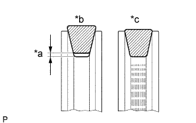
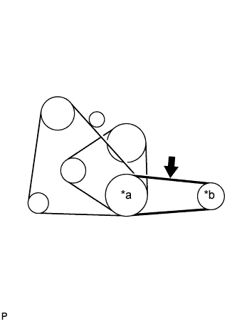

ПРИВОДНОЙ РЕМЕНЬ (для моделей с 5L-E) > ПРОВЕРКА БЕЗ СНЯТИЯ С АВТОМОБИЛЯ |
| 1. ПРОВЕРЬТЕ НАТЯЖЕНИЕ ПРИВОДНОГО РЕМНЯ |
|  |
Визуально проверьте ремень на наличие трещин, следов масла и износа. Убедитесь, что ремень не касается дна канавки шкива.
При необходимости замените ремень.
| *a | Зазор |
| *b | Правильно |
| *c | Неправильно |
|  |
Проверьте прогиб приводного ремня, нажав на него в точке, указанной на рисунке, с усилием 98 Н (10 кгс, 22 фунт-силы).
| *a | Шкив коленчатого вала |
| *b | Шкив лопастного насоса |
 | Точка измерения прогиба ремня |
| Параметр / Устройство | Заданные условия |
| Новый ремень | 7,5 - 9,5 мм (0,295-0,374 дюйма) |
| Ремень, бывший в употреблении | 9,0 - 13 мм (0,354-0,512 дюйма) |
С помощью прибора для проверки натяжения приводных ремней проверьте натяжение приводного ремня.
| Параметр / Устройство | Заданные условия |
| Новый ремень | 441 - 539 Н (45 - 55 кгс, 99,1 - 121 фунт-сила) |
| Ремень, бывший в употреблении | 245 - 343 Н (25 - 35 кгс, 55,1 - 77,1 фунт-сила) |